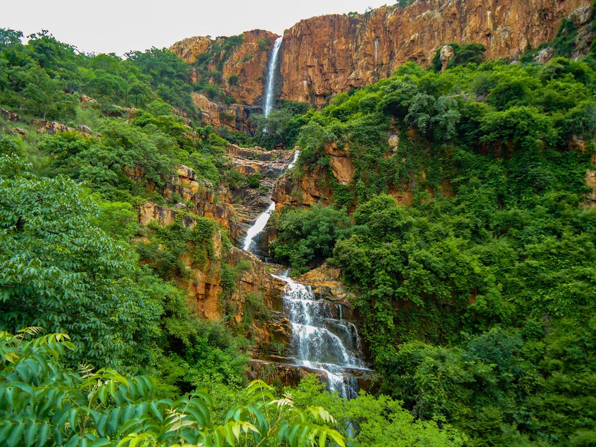

Tirupati district is one of the eight districts of Rayalaseema region in the Indian state of Andhra Pradesh.
The district headquarters is located at Tirupati city. This district is known for its numerous historic temples, including the
Hindu shrine of Tirumala Venkateswara Temple and Sri Kalahasteeswara temple. The district is also home to Satish Dhawan Space
Centre (formerly Sriharikota Range), a rocket launch centre located in Sriharikota. The river Swarnamukhi flows through Tirupati,
Srikalahasti , Naidupeta, Vakadu and join into the Bay of Bengal.
The district is an educational hub and has central and state universities and institutes including IIT Tirupati, Sri Venkateswara
University, National Sanskrit University, IISER Tirupati, IIIT Sri City. Sri Venkateswara Institute of Medical sciences (SVIMS),
Sri Padmavati Mahila Visvavidyalayam, Sri Venkateswara Vedic University, Sri Venkateswara Veterinary University, Sri Venkateswara
Agriculture College, Sri Padmavati Women's Medical College, Sri Venkateswara Ayurvedic College , Sri Venkateswara College of
Physiotherapy, etc The district is home to Sri City, one of the leading special economic zone (SEZ) in India.
On 26 January 2022, Balaji district was proposed to be formed from parts of Chittoor, Nellore districts as one of the twenty-six
districts.[8] Based on the feedback from public, the name was later changed to Tirupati district. The new district came into
existence on 4 April 2022 with Gudur, Sullurupeta revenue divisions from Nellore district and Tirupati revenue division from
Chittoor district. Srikalahasti revenue division was newly created.
| District headquarters | Tirupati |
|---|---|
| Revenue divisions | Tirupati,Gudur,Srikalahasti,Sullurupeta |
| Cities | Tirupati |
| Towns and urban centers | Gudur,Srikalahasti,Sullurpeta,Sri City, Puttur,Naidupet,Venkatagiri,Pakala,Sriharikota |
| Lok Sabha constituencies | Tirupati,Chittoor |
| Assembly constituencies | Tirupati,Chandragiri,Gudur (SC) , Srikalahasti,Satyavedu,Sullurpeta (SC),Venkatagiri |